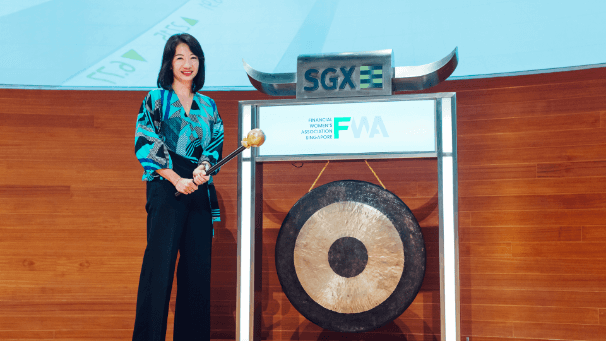
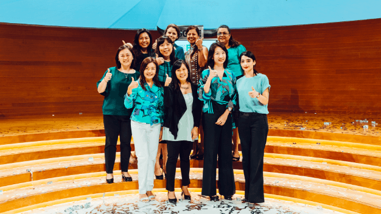
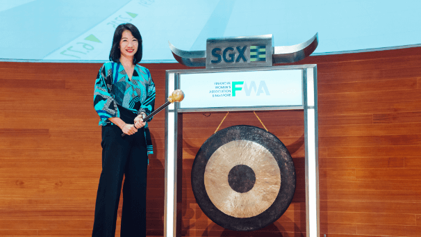
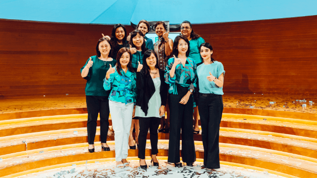
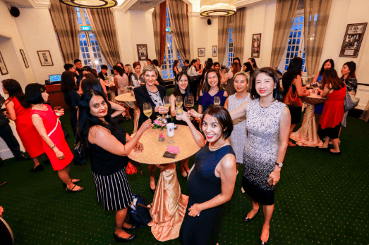
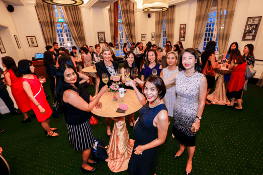
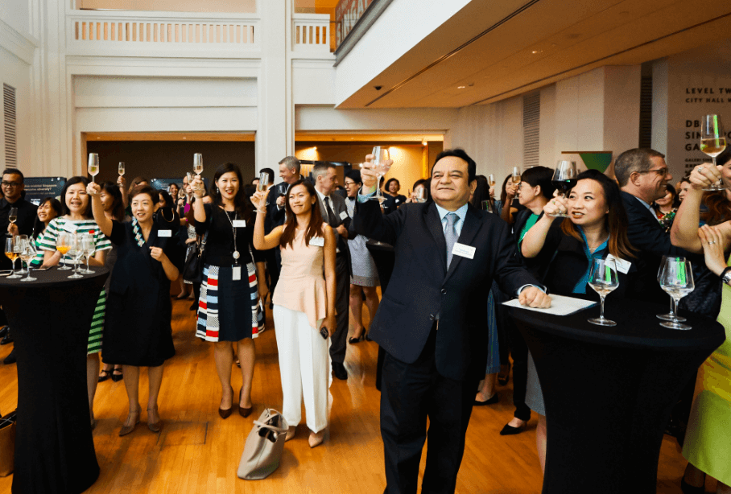
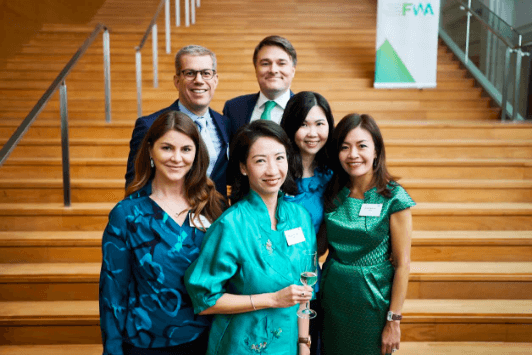
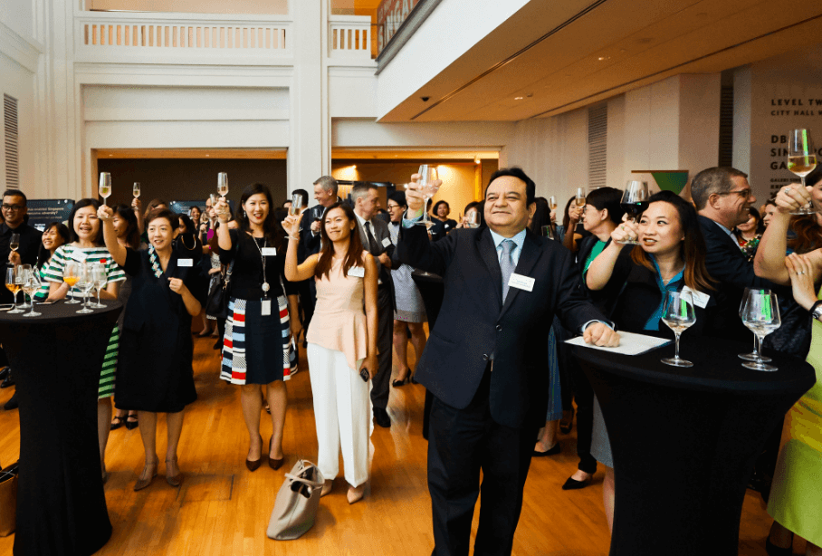
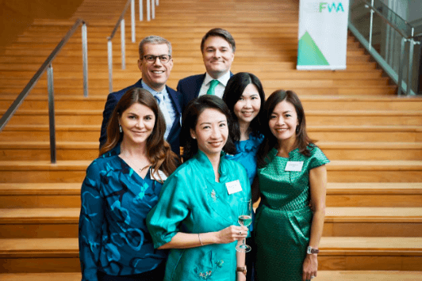

Home
WEimpact
Contact
- About
- Announcements
- President’s Message
- Mission Statement
- Committee Members
- Constitution
- FWA Corporate Members
- Upcoming Events
- Event Calendar
- Past Events
- Events Gallery
- No Show Policy
- Individual Member
- Corporate / Institutional Member
- Membership Renewal
- Join Now
- Programme Overview
- Sign-Up As Mentee
- Mentoring Events


 



 

 


